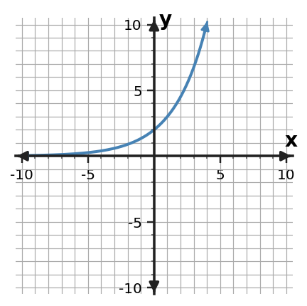
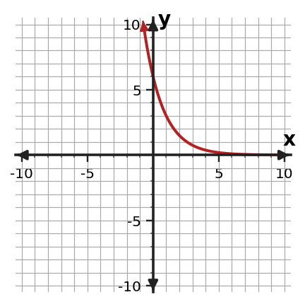
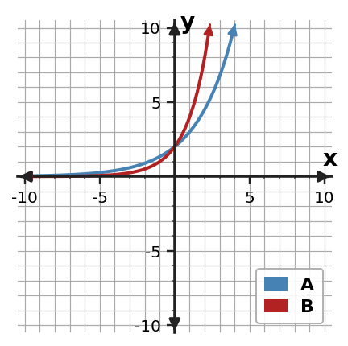
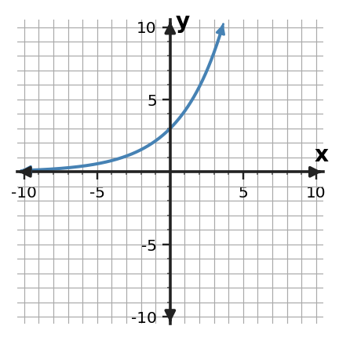

Graphing and Analyzing Exponential Functions
Guided Notes
Use patterns, representations, and evidence to explain how the mathematics works.
Learning Target
Students will graph exponential functions and analyze key features.
- I can design graphs of exponential functions using key points, growth or decay factors, and asymptote behavior.
- I can apply key features of exponential graphs to interpret domain, range, intercepts, and end behavior.
- I can assess whether a graph is reasonable for an exponential equation or situation.
Vocabulary / Key Notation Preview
asymptote • domain • range • intercept • end behavior
Sort the vocabulary. Write each vocabulary word in the column that best matches what you know right now. You may move a word later.
| Know for sure | Recognize | Don't know yet |
|---|---|---|
What's to Come
DO NOT SOLVE IT YET.
Circle anything familiar, underline symbols, labels, conditions, data, or features that seem important, and write short notes about what you think may matter later.
Compare the two shared graphs. For each graph, notice the intercept, the direction of change, and what happens near the horizontal axis. List two features the graphs share and one important way they differ.


Let's Get Started
Skim the section. Record what catches your attention before you read closely.
| What I noticed | |
|---|---|
| What I predict | |
| What I wonder |
READ IN SHORT CHUNKS.
Annotate the words and visuals together. Underline evidence, circle or highlight bold vocabulary, label arrows, measurements, or important features, connect sentences to figures, and jot short questions or connections in the margins.
I can design graphs of exponential functions using key points, growth or decay factors, and asymptote behavior.
A basic exponential graph can be built from the same structure used in its equation. For $y=ab^x$, start with the key point $(0,a)$, then use the factor $b$ to move through one-unit x-steps. A short table around $x=0$ often gives enough accurate points to show the pattern. Plotting points from the equation is more reliable than sketching a curve from memory.
The factor controls the direction and speed of change. When $b\gt1$, outputs grow as x increases; when $0\lt b\lt1$, outputs decay as x increases. In both basic cases with positive $a$, the graph stays above the x-axis and approaches $y=0$ on one side. The line $y=0$ is a horizontal asymptote: the graph gets arbitrarily close in the basic model without reaching or crossing it.
A smooth exponential curve should pass through the plotted points and reflect multiplicative change. The graph is not a straight segment between points, and it should not flatten into the asymptote. Using the intercept, a few factor-generated points, and asymptote behavior together gives a sketch that communicates the equation rather than only a general "J" or decay shape.
- What point can you identify immediately from $y=ab^x$?
- How does the value of $b$ tell whether the graph grows or decays as x increases?
- Why should an accurate basic exponential sketch approach $y=0$ without crossing it when $a\gt0$?
- Mark the y-intercept $(0,a)$.
- Choose nearby x-values such as $-2,-1,0,1,2$ when appropriate.
- Compute the matching y-values using the equation or repeated factors.
- Plot the points and draw a smooth growth or decay curve.
- Show the graph approaching the horizontal asymptote $y=0$ in the basic model.
Example 1: Connect a Table and Equation
For $f(x)=2(2)^x$, complete a key-point table for $x=-1,0,1,2$. Use the points to describe the graph as growth or decay.
You Try It 1: Connect a Table and Equation
For $f(x)=4(\frac{1}{2})^x$, complete a key-point table for $x=-1,0,1,2$. Use the points to describe the graph as growth or decay.
Example 2: Analyze Graph Features
Make a small table of key points and sketch $y=3(\frac{3}{2})^x$. Label the $y$-intercept and horizontal asymptote.
You Try It 2: Analyze Graph Features
Make a small table of key points and sketch $y=2(2)^x$. Label the $y$-intercept and horizontal asymptote.
Example 3: Read Initial Value and Factor
Graphs A and B have the same positive initial value, but one uses factor 1.5 and the other uses factor 2. Which graph grows faster for positive $x$? Explain how the graph supports your answer.

You Try It 3: Read Initial Value and Factor
Graphs A and B have the same positive initial value. Graph A uses factor 1.25 and Graph B uses factor 1.75. Which graph grows faster for positive $x$? Explain how the graph supports your answer.

I can apply key features of exponential graphs to interpret domain, range, intercepts, and end behavior.
Graph features summarize how a function behaves. For a basic exponential function with positive $a$, the domain is all real x-values because the exponent can take any real value. The range is positive y-values, written $y\gt0$, because positive exponential outputs stay above the horizontal asymptote. A real context may restrict the domain further, such as time $t\ge 0$.
The y-intercept is $(0,a)$ and represents the initial value in many models. A basic positive exponential function has no x-intercept because its output does not become zero. The horizontal asymptote $y=0$ describes a long-run boundary: a decay model can get closer and closer to zero, while a growth model approaches zero in the opposite x-direction.
End behavior describes what the graph does far to the left and far to the right. For growth, the output increases without bound as x increases and approaches 0 as x decreases. For decay, those directions reverse. These statements should agree with the equation, the graph, and any context restrictions rather than being memorized separately.
- What are the domain and range of a basic positive exponential function?
- Why does the y-intercept have special meaning in many exponential contexts?
- How does the right-hand end behavior differ between exponential growth and exponential decay?
| Feature | What to look for |
|---|---|
| y-intercept | $(0,a)$ |
| x-intercept | None in the basic positive model |
| horizontal asymptote | $y=0$ |
| domain | All real x-values unless context restricts it |
| range | $y\gt0$ unless the model is transformed |
| end behavior | Controlled by growth vs. decay direction |
Example 4: Analyze Graph Features
State the domain and range of $f(x)=8(\frac{1}{2})^x$.
You Try It 4: Analyze Graph Features
State the domain and range of $f(x)=5(\frac{3}{2})^x$.
Example 5: Analyze Graph Features
Use the graph to identify the $y$-intercept, describe the end behavior, and decide whether it shows exponential growth or decay.

You Try It 5: Analyze Graph Features
Use the graph to identify the $y$-intercept, describe the end behavior, and decide whether it shows exponential growth or decay.

Example 6: Use Equation Structure
Describe what happens to $f(x)=7(\frac{1}{2})^x$ as $x$ becomes very large and as $x$ becomes very negative.
You Try It 6: Use Equation Structure
Describe what happens to $f(x)=4(\frac{4}{5})^x$ as $x$ becomes very large and as $x$ becomes very negative.
I can assess whether a graph is reasonable for an exponential equation or situation.
A graph is reasonable only when several features agree with the equation or situation. Start with the easiest checks: does the graph pass through the correct initial value, and does it move in the direction predicted by the factor? Then check multiplicative curvature and the expected asymptote behavior. A graph that looks "exponential" but misses the intercept is not the graph of the given equation.
Scale matters when judging shape. Two exponential graphs with different factors can appear similar in a narrow window, and a slow exponential curve can look almost linear over a short interval. Use numerical points or parameter information rather than relying only on visual steepness. Likewise, a context can make a mathematically possible part of a graph irrelevant, such as negative time.
Reasonableness is a coordination task: equation, graph, table, and context should support the same claims. If they disagree, identify the exact feature in conflict instead of rejecting the whole representation vaguely. This habit is especially useful for finding graphing mistakes, copied values, or models that use the wrong growth/decay factor.
- Name two quick checks that can test whether a graph matches $y=ab^x$.
- Why can a narrow graphing window make an exponential curve look misleading?
- If a graph has the correct shape but the wrong y-intercept, what does that tell you?
- Correct y-intercept / initial value?
- Growth or decay direction matches the base?
- Nearby points follow the equation or constant factor?
- Horizontal asymptote behavior is reasonable?
- Graph window and scale make the important features visible?
- Context domain and units are respected?
Summary
- Graph exponential functions from the y-intercept, factor-generated points, and asymptote behavior.
- For a basic positive exponential function, the domain is all real numbers, the range is positive values, and $y=0$ is a horizontal asymptote.
- Growth and decay have opposite end behavior as x increases.
- Judge a graph by coordinated evidence from parameters, points, scale, asymptote behavior, and context.
Common Mistakes
- Drawing the curve through the horizontal asymptote in a basic positive exponential model.
- Treating exponential end behavior as if the function changes by a constant amount.
- Using graph shape alone without checking the y-intercept and factor.
- Forgetting that a context can restrict the domain even when the algebraic function has all real inputs.